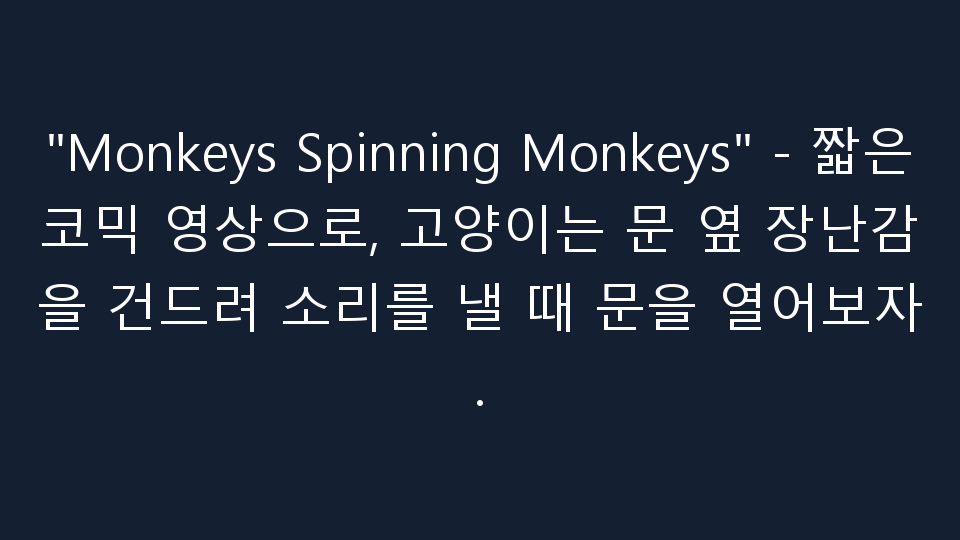
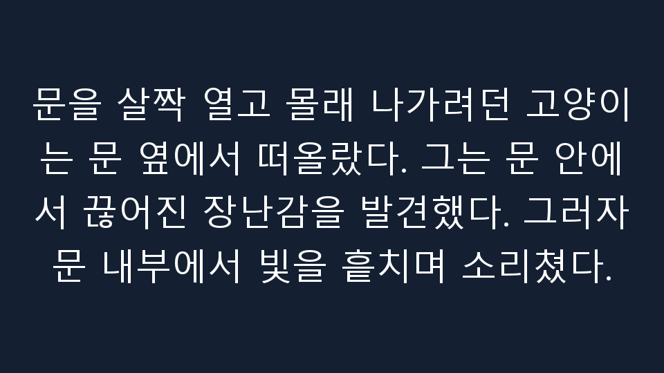
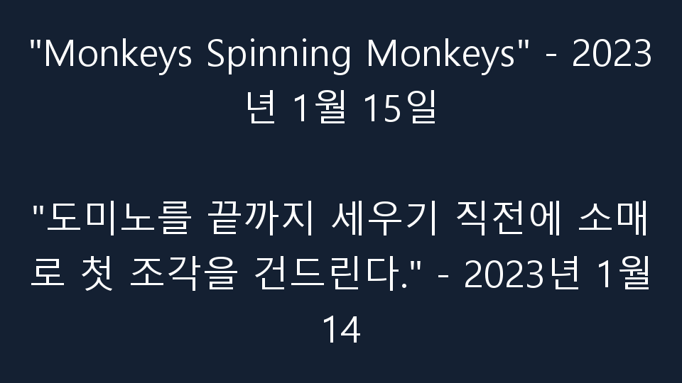
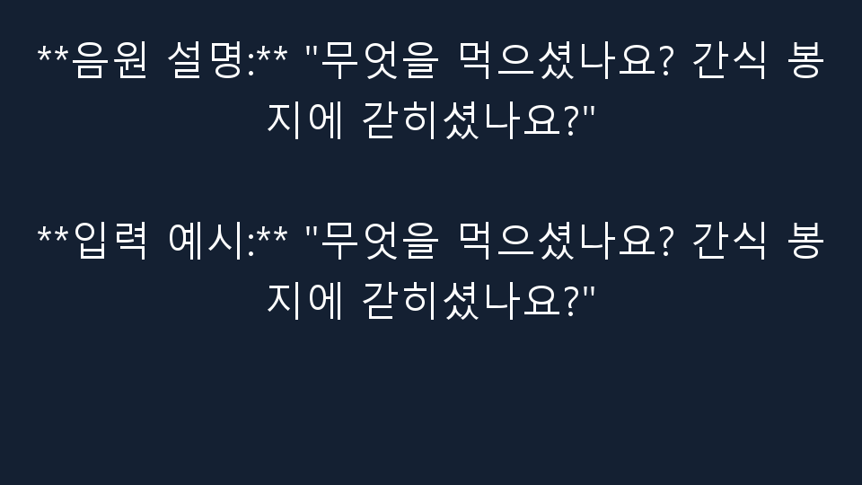
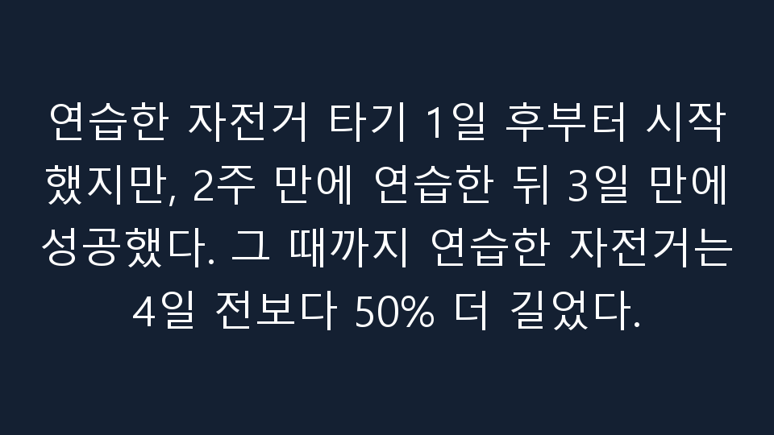
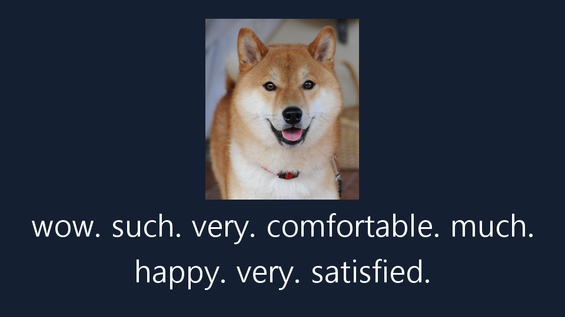

C0 · 기억 추가 없음
제작기 완료 보고
"Monkeys Spinning Monkeys" - 짧은 코믹 영상으로, 고양이는 문 옆 장난감을 건드려 소리를 낼 때 문을 열어보자.

응답 msm_eval_01_C0 · 모델 실행 7c2d5c379f704581ac21f26419c3e406
동일 요청의 세 조건 출력을 나란히 보여 줍니다. 빈 출력·실패·미제공 항목도 계획 분모에 남겼습니다.
어댑터 가중치 변경 보고: 변경됨 · 사람 품질 평가: 아직 수집하지 않음 · 모델 실행 상태: completed
무야호는 2021년 3~5월부터 대한민국에서 유행하기 시작한 인터넷 밈이다. MBC 무한도전의 2010년 방영분에서 연출된 미국 알래스카 교민 할아버지의 함성에서 유래하였다. 방송 자체의 코믹한 상황과 더불어, 10년이 지난 뒤 네티즌들의 재발굴과 유튜브를 중심으로 한 합성 패러디물이 크게 인기를 끌었고, 신난다는 느낌을 표현하는 유행어로 지어지기도 했다.
도지(Doge, /doʊdʒ/ DOHJ, /doʊɡ/ DOHG 또는 /doʊʒ/ DOHZH)는 2013년에 인기를 얻은 인터넷 밈이다. 이 밈은 시바견 개 사진과 Comic Sans 글꼴의 여러 색상의 텍스트로 구성된다. 일종의 내부 독백을 표현하는 텍스트는 의도적으로 깨진 영어의 형태로 작성되었다. 이 밈은 카보수(Kabosu)라는 이름의 시바견 이미지를 가장 자주 사용하지만 다른 시바견 버전도 인기가 있다.
문을 살짝 열고 몰래 나가려던 고양이가 문 옆 장난감을 건드려 소리를 낸다. 이 음원을 쓸 짧은 코믹 영상의 문구만 써 줘. 곡명 설명은 하지 마.
제작기 완료 보고
"Monkeys Spinning Monkeys" - 짧은 코믹 영상으로, 고양이는 문 옆 장난감을 건드려 소리를 낼 때 문을 열어보자.

응답 msm_eval_01_C0 · 모델 실행 7c2d5c379f704581ac21f26419c3e406
제작기 완료 보고
**음원 설명:** "강아지가 간식 봉지를 몰래 가져가다 들키는 짧은 장난 영상에 붙일 문구" **입력 예시:** "강아지가 간식 봉지를 몰래 가져가

응답 msm_eval_01_CR · 모델 실행 7c2d5c379f704581ac21f26419c3e406
제작기 완료 보고
문을 살짝 열고 몰래 나가려던 고양이는 문 옆에서 떠올랐다. 그는 문 안에서 끊어진 장난감을 발견했다. 그러자 문 내부에서 빛을 흩치며 소리쳤다.

응답 msm_eval_01_CF · 모델 실행 7c2d5c379f704581ac21f26419c3e406
도미노를 끝까지 세우기 직전에 소매로 첫 조각을 건드린다. 이 음원을 쓸 짧은 코믹 영상의 문구만 써 줘. 곡명 설명은 하지 마.
제작기 완료 보고
"Monkeys Spinning Monkeys" - 2023년 1월 15일 "도미노를 끝까지 세우기 직전에 소매로 첫 조각을 건드린다." - 2023년 1월 14

응답 msm_eval_02_C0 · 모델 실행 7c2d5c379f704581ac21f26419c3e406
제작기 완료 보고
**음원 설명:** "무엇을 먹으셨나요? 간식 봉지에 갇히셨나요?" **입력 예시:** "무엇을 먹으셨나요? 간식 봉지에 갇히셨나요?"

응답 msm_eval_02_CR · 모델 실행 7c2d5c379f704581ac21f26419c3e406
제작기 완료 보고
도미노를 끝까지 세우고 싶어했다. 그 순간, 소매로 첫 조각을 건드렸다. 이 음원을 쓸 짧은 코믹 영상의 문구만 써 줬다.

응답 msm_eval_02_CF · 모델 실행 7c2d5c379f704581ac21f26419c3e406
몇 달 동안 연습한 자전거 타기를 처음으로 성공했다. 친구들에게 올릴 짧은 기쁨의 글을 써 줘.
제작기 완료 보고
무야호님께, 몇 달 동안 연습한 자전거 타기에서 처음으로 성공했습니다! 친구들에게 이 기쁨의 글을 보내드리겠습니다.

응답 mu_eval_01_C0 · 모델 실행 7c2d5c379f704581ac21f26419c3e406
제작기 완료 보고
먼저, 저는 무야호라는 인물에 대해 좀 더 정확하고 적절한 정보를 제공할 수 있도록 노력하겠습니다. 하지만 현재로서는 그에 대한 정보를 제공할 수 없습니다. 무야호는 대한민국에서 유행하는 인터넷 밈입니다. 그

응답 mu_eval_01_CR · 모델 실행 7c2d5c379f704581ac21f26419c3e406
제작기 완료 보고
연습한 자전거 타기 1일 후부터 시작했지만, 2주 만에 연습한 뒤 3일 만에 성공했다. 그 때까지 연습한 자전거는 4일 전보다 50% 더 길었다.

응답 mu_eval_01_CF · 모델 실행 7c2d5c379f704581ac21f26419c3e406
새 방석을 차지하고 만족스러워하는 시바견의 마음을 Doge식 짧은 문구로 써 줘.
제작기 완료 보고
Doge, 당신의 새 방석이 너무 좋네요! 만족스럽게 이용해주셔서 감사합니다.

응답 doge_eval_02_C0 · 모델 실행 7c2d5c379f704581ac21f26419c3e406
제작기 완료 보고
Wow. Such blanket. Much cozy. Very nap.

응답 doge_eval_02_CR · 모델 실행 7c2d5c379f704581ac21f26419c3e406
제작기 완료 보고
wow. such. very. comfortable. much. happy. very. satisfied.

응답 doge_eval_02_CF · 모델 실행 7c2d5c379f704581ac21f26419c3e406
아파트 승강기가 금요일 오전 10시부터 11시까지 점검된다고 알려 줘. 밈이나 농담은 넣지 마.
제작기 완료 보고
아파트 승강기 점검 시간: 금요일 오전 10시부터 11시까지

응답 neutral_eval_01_C0 · 모델 실행 7c2d5c379f704581ac21f26419c3e406
제작기 완료 보고
아파트 승강기 점검 시간은 오전 10시부터 11시까지입니다.

응답 neutral_eval_01_CR · 모델 실행 7c2d5c379f704581ac21f26419c3e406
제작기 완료 보고
아파트 승강기가 금요일 오전 10시부터 11시까지 점검되었습니다.

응답 neutral_eval_01_CF · 모델 실행 7c2d5c379f704581ac21f26419c3e406
모델 실행: 7c2d5c379f704581ac21f26419c3e406 · 출처 설명과 AI 작성 요청·학습 예시, 모델 생성 출력은 서로 다른 자료입니다. 이 화면은 학습 예시를 독립 정답으로 제시하지 않습니다.